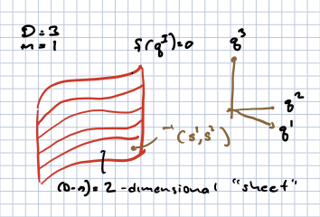
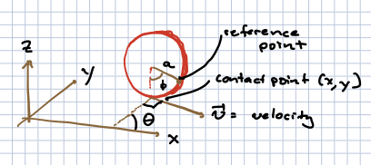
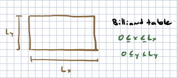

Constrained Lagrangian Systems#
I advertised that one advantage of Lagrangian dynamics is the ability to easily incorporate constraints. I should have said, some constraints; there are some that Lagrangian mechanics cannot handle (just as the framework does poorly with friction). Still when it works, it is very powerful.
So we will open by describing different types of constraints, and then move to redoing the mead-on-a-wire example we covered in the first week of the course.
Holonomic and non-holonomic constraints#
Holonomic constraints#
These are constraints that can be simply written as a set of algebraic equations on the space of coordinates, that us,
where \(I = 1, \ldots D\) and \(\alpha = 1,\ldots, m < D\). This is \(m\) equations in \(D\) unknowns. The solutions form an \(n = D - m\)-dimensional space of solutions (under the right conditions, called a submanifold); while \(m\) is called the codimension of this space. Roughly the codimension is the number of directions that is in some sense perpendicular to this space.

As a simple example, for a single particle in \(d = 3\), \(f_1 = z = 0\) defines the \(x-y\) plane. Similarly, \(y = 0\) defines the \(x-z\) plane. In each case the dimension of the space of solutions is \(2\) and the codimension \(1\).
In this language the \(x\) axis satisfies \(f_1 = z = 0\), \(f_2 = y = 0\). The \(x\) axis is the intersection of the \(xy\) and \(xz\) planes. The dimension of the space of solutions is \(1\) and the codimension \(2\).
A more complicated example is \(x^2 + y^2 - R^2 = 0\) in \(D = 2\), which describes a circle with radius \(R\).
The constraint equation \(f_1 = x^2 + y^2 + z^2 - R^2 = 0\) defines a sphere of radius \(R\) in \(3\) dimensions. If we also include \(f_2 = z- \ell\) with \(\ell < < R\), then we have a circle parallel to the \(x-y\) plane, with radius \(\sqrt{R^2 - \ell^2}\)
We can parameterize the space of solutions with a set of coordinates \(s^i\), so that \(q^I(s^i)\) lies on the space of solutions. This paramaterization may have to be local; for example, in the case of a sphere, we often use different parameters to describe the northern and southern hemisphere.
These will turn out to be simply dealth with in Lagrangian mechanics via Lagrange multiplier techniques.
Non-holonomic constraints.#
This is basically every other type of constraint and there are several ways a constraint can fail to be holonomic.
Non-integrable constraint. Let is impose constraints locally on each point of the ambient space. That is, locally at each point \(q^I_0\), we demand that motion away from this point by an infinitestimal \(\delta q^I\) must satisfy
Locally, in some infinitesimal neighborhood, this will look like a holonomic constraint. But there is no guarantee that this will hold globally. This failure will hold if \(F_I\) is not integrable, that is if we cannot write it as
wuth \(f_{\alpha}(q^I_0) = 0\) (which we can achieve by a constant shift of \(f\)). If we can satisfy (46), then (45) becomes
An example of a non-holonomic constraint can be found in pp 15-16 of [Goldstein et al., 2002]. Consider a vertical disc with radius \(a\), rolling without slipping or tilting on the \(x-y\) plane, as shown in this figure:

The configuration space is described by the contact point of the disc on the x-y plane with coordinates \((x,y)\); the angle \(\theta\) between the \(x\)-axis direction and perpendicular to the disc; and the angle \(\phi\) describing the angle of a reference point on the disk’s edge, with respect to the \(z\) axis.
The total speed of the disc is \(a {\dot \phi}\); this translates to velocities:
For an infinitesimal motion in time, \(\delta q^I = \dot{q}^I \delta t\), where here \(q^{I = 1,\ldots,4} = (x,y,\phi,\theta)\). This we can write the above as
Starting with the first equation, there are no functions \(f_1\) for which \(\frac{\del f_1}{\del x} = 1\), \(\frac{\del f_1}{\del y}= 0\), \(\frac{\del f_1}{\del \phi} = - a \sin\theta\), \(\frac{\del f_1}{\del \theta} = 0\). The last two equations make thisclear, as you can’t have the \(\phi\) derivative of \(f_1\) be \(\theta\)-dependent while \(f_1\) has a vanishing \(\theta\)-derivative. A more algorithic wat to detect whether \(F_i = \frac{\del f}{\del q^I}\) for some \(f\) is to note that if it is, then
since it doesn’t matter in which order you take partial derivatives. Thus, for the constraint (45) to be integrable, we must have
In fact, one can argue that in a finite “star-shaped” region, Poincare’s theorem states that if this condition is met, a function \(f_{\alpha}\) must exist so that \(F_{I,\alpha} = \nabla_I f_{\alpha}\).
Inequality constraints. Consider, in two dimensions, a particle on a rectangular billiard table with length \(L_x\) in the \(x\) direction and \(L_y\) in teh \(y\) direction. The particle is subject to the constraints

Clearly these cannot be written as the derivative of a function.
Velocity-dependent constraints. If the constraints are of the form
and \(\frac{\del F_{I,\alpha}}{\del q^J} - \frac{\del F_{J,\alpha}}{\del q^I} = 0\) then (under appropriate conditions on the region of interest) by writing \(\det q^I = \delta q^I \delta t\), we can convert these to holonomic constraints. If \(F_{I,\alpha}\) is not so constrained, the constraints are nonholonomic. Also, if \(F_{I,\alpha}\) containsadditional dependence on \(\dot{q}^I\), the constraints are nonholonomic.
Imposing holonomic constraints#
Example: a bead on a wire#
We can impose the constraints in teh Lagrangian by adding an additional set of coordinates \(\lambda_{\alpha}\) known as Lagrange multiplies, so that the full Lagrangian is:
where \(L_0\) captures the kinetic energy of the particle, and any forces that do not follow from the constraint. In the bead on a wire example, this would be the gravitational force.
Applying the Euler-Langrange equations, the fact that \(\dot{\lambda}\) dies not appear means that the associated generalized momentum \(p_{\alpha} \frac{\del L }{\del \dot{\lambda}_{\alpha}} = 0\). The Euler-Lagrange equation then states:
which is the constraint equation. Note however that we have a new generalized force:
This force is a gradient of \(f\) which means it acts perpendicularly to the level sets of \(f\) which include the constraint surface. Thus, it is the normal force. \(\lambda\) can be set to ensure that Newton’s laws for \(q^I\) do not take one off of the constraint surface.
We can solve for this constraint by finding coordinates \(s^i\) living on the constraint surface, so that \(f_{\alpha}(q^I(s^i)) = 0\) for all \(s^i\). We can then write
We then simply apply the Euler-Lagrange equations to \({\tilde L}\). In fact a little work is needed to show that this gives the correct equations, equivalent to the full equations of motion for \(q^I\) with the normal force included. I will start this in the section below and assign the rest in the next problem set.
To see how this works, let us go back to the bead on the wire example, for which \(f = z - z(x)\). In this case. We just need a single coordinate along the wire, which we take to be \(s = x\). Then
The generalized momentum is
and the generalized force is:
So \(\dot{p} = {\cal F}\) gives us
or
This is exactly what we got in our treatment via Newton’s laws where we computed the explicit normal force, only it was much easier! NB – an earlier draft of that section had the wrong sign in front of the second term on the RHS of (61). I found that sign mistake by doing the correct calculation above.
Consistency of our solution for the constraints#
The full equations of motion for a system constrained to a subspace of the configuration space by a normal force is:
Iw we consider \(\delta q^I\) to be an infinitesimal motion along the constraint surface. This means that \(N_I \delta q^I = 0\) since the normal force is always perpendicular to this surface, and we can write
Now if \(s^i\) parameterize the constraint surface, then for \(\delta q^I\) along this surface we can write
Thuis should hold for any \(\delta s^i\) along the constraining surface. The goal is to show that \((\dot{p}_I - F_I) \frac{\del q^I}{\del s^i} = 0\) is equivalent to the equations of motion derived from \({\tilde L}\). We will leave this as a problem for the student to solve.